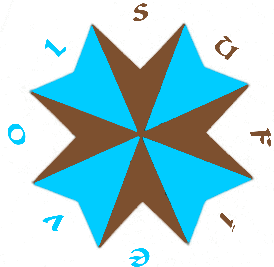
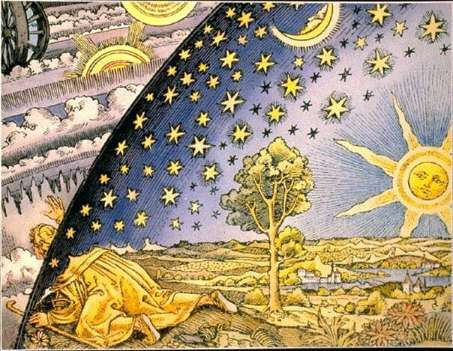

ОБЪЯВЛЕНИЯ: см. в конце этой страницы.

ГЮРДЖИЕВ, СУФИЗМ И ПСЕВДО-СУФИЗМ
(Gurdjieff, Sufism and pseudo-sufism)
Сейчас не работает
|
ОСНОВНЫЕ СООБЩЕНИЯ
Раздел XI. С форума enneagon.ru XI.4. СТРАНИЧКА ИСТОРИИ (Some History) New XI.3. НЕКОТОРЫЕ МЕТОДОЛОГИЧЕСКИЕ СООБРАЖЕНИЯ (Some Methodological Considerations) New XI.2. БЛЕСК И НИЩЕТА ДИССОНАНСА (Автор: АсСалам) (Splendeurs et Misères of Dissonance) New XI.1. ФЕНОМЕН "ШАХОСЛОВИЯ" (On the Phenomen of Shahism) New
Раздел X. Вне форумов X.4. ЕЩЕ РАЗ О ТРАДИЦИИ (Onсe Again on the Tradition) New X.3. РАЗМЫШЛЯЯ О СОВЕСТИ (On Conscience) X.2. ПРЕКРАСНОЕ ДАЛЁКО (Our Beautiful Far-away) X.1. Небылицы: ВСТРЕЧА СО ЗНАНИЕМ (An Encounter with the Knowledge)
Раздел IX. IX.1. О ИЕРУСАЛИМ, ИЕРУСАЛИМ! (Oh Jerusalem, Jerusalem!) IX.2. ТРИНАДЦАТАЯ БУКВА ч. I. (The Thirteenth Letter. I.) IX.3. ОБ ИЗУЧЕНИИ КАББАЛЫ (On Studying of the Kabbalah)
Раздел VIII. Вне форумов VIII.1. ЖИВОТНЫЕ И ЛЮДИ (Animals and People) VIII.2. КАК СПАСТИ МИР? (How to Save the World?)
Раздел VII. Форум сайта «Базар-Вокзал» VII.1. СУФИЗМ: ТРАДИЦИЯ ИЛИ ОРДЕНЫ? (Sufism: Tradition or Orders?) VII.2. ТЕЛЕПАТИЯ (Telepathy) VII.3. КСТАТИ, ОБ ЭННЕАГРАММЕ (On the Enneagram, BTW) VII.4. ИНТЕРВАЛ (Interval) VII.5. О ЧИСЛАХ * (On Numbers) VII.6. ТАРО И СУФИЗМ (Tarot and Sufism) VII.7. ТРИ ВЛЕЧЕНИЯ (Three Attractions)
Раздел VI. Вне форумов VI.1. КТО ЧТО ИЩЕТ (What People Look For) VI.2. ГАРМОНИЯ И ЖИЗНЬ (Harmony and Life) VI.3. О СУФИЙСКИХ ОБУЧАЮЩИХ ИСТОРИЯХ (On Teaching Stories) VI.4. ВИКТОР ПЕЛЕВИН: Вчера. Сегодня... Завтра? (III) (Victor Pelevin)
Раздел V. Форум «Каравай» V.1. ЗНАНИЕ - СИЛА (Knowledge and Power)
Раздел IV. Форум ансамбля ПВО (6.25.2002 – 6.26.2003) IV.1. ФОРУМ: РАБСТВО ИЛИ СВОБОДА? (Forum: Slavery or Freedom?) IV.2. ВКУС ЧАЯ (Tea Taste) IV.3. СКАЗКА О СИЛЕ (К вопросу о магии) * (A Tale of Power: On Magic) IV.4. Небылицы: ВСТРЕЧА (Fables: An Encounter) IV.5. Небылицы: ИСПЫТАНИЕ (Fables: A Test) IV.6. СИЛА ВЫБИРАЕТ (The Choice is Made by the Power) IV.7. УЧИТЕЛЬ И БЕНЕФАКТОРЫ (Teacher and Benefactors) IV.8. ПУТЬ ВОИНА (The Way of the Warrior) IV.9. ПОЧЕМУ МЫ ЗДЕСЬ? (Why Are We Here?)
Раздел III. Форум 7. III.1. О «МИСТИЧЕСКОМ ОПЫТЕ» (On “Mystical Experience”)III.2. Великая Тайна Мироздания и ее объяснение (The Great Mystery) III.3. РЕКА ЖИЗНИ * (The River of Life) III.4. ИЩИ, И ТЕБЯ НАЙДУТ (“Seek and You Will Be Found”) III.5. КТО ПОЛУЧАЕТ БАРАКУ (БЛАГОДАТЬ)? (Who Gets the Baraka?) III.6. ЦЕНТРЫ И ТАРО (Centers and Tarot) III.7 О МУЗЫКЕ (On Music) III.8 ЦВАРНОХАРНО И ПР. (Tzvarnoharno, etc.)
Раздел II. Опыт участия в форумах Лёнинизм II.1. СУФИЙСКОЕ СТИХОТВОРЕНИЕ (The Sufi Poem) II.2. О «ДОЛГЕ ЛЮБВИ» (On ‘Debt of Love’) II.3. КОЕ-ЧТО О СУЩНОСТИ (Something on ‘Essence’)II.4. О БОЕВЫХ ИСКУССТВАХ И НЕ ТОЛЬКО О НИХ (On Martial Arts and not only) II.5. О «НАХОЖДЕНИИ» ШКОЛЫ (On Finding a School) II.6. НЕМНОГО ОБ ИЗМЕРЕНИЯХ (A Little on Dimensions) II.7. ДНИ НЕДЕЛИ (Days of the Week)II.8. ВСКОЛЬЗЬ ОБ ЭЛИКСИРЕ (In Passing on Elixir) II.9. О ТАЙНАХ ЭЗОТЕРИЗМА И ИХ РАСКРЫТИИ (On Esoteric Mysteries)II.10. О БХАКТИ И ДР. (On Bhakti, etc.) II.11. АХ, ЖЕНЩИНЫ! (Oh, Women!) II.12. О ТИПАХ УЧАСТНИКОВ (On Types of Participants) II.13. ЧЕЛОВЕК No. 4 (Man Number 4) II.14. НОВОСТИ С АЛЬДЕБАРАНА (The News from Aldebaran) II.15. МАЯТНИК (The Pendulum) II.16. О ВЫСШИХ ВЛИЯНИЯХ (On Higher Influences) II.17. УСПЕНСКИЙ И ТРАДИЦИЯ (Ouspensky and Tradition) II.18. ЗАКОН ЕСТЬ ЗАКОН (The Law is the Law) II.19. СУФИЗМ И АСТРОЛОГИЯ (Sufism and Astrology)
Раздел I. Опыт участия в форуме т.н. школы «Остров сознания» I.1. ДЕНЬГИ И ТРИ СИЛЫ (Money and Three Forces) I.2. О ПАМЯТНИКЕ ИВАНУ ГЮРДЖИЕВУ (On the Tombstone of Ivan Gurdjieff)I.3. СВОДНАЯ ДИАГРАММА ИДЕЙ ГЮРДЖИЕВА (Diagram of Gurdjieff’s Ideas)I.4. АРХАНГЕЛЫ И МЫ (Archangels and We) I.5. О ТИПАХ СУЩНОСТИ (On Types of Essence) I.6. О «ПУТИ ПРОТИВ БОГА» (On “Way Against God”) I.7. РЕЛИГИИ И ШКОЛЫ (Religions and Schools) I.8. О «ПУТИ ПО СЕРДЦУ» (On “Path with Heart”)I.9. ЙОГА И МЫ (Yoga and We) I.10. О ШКОЛЕ (On School) I.11. О КРИТЕРИЯХ (On Criteria) I.12. О «НЕОБИТАЕМЫХ ОСТРОВАХ» (On “Desert Islands”)I.14. ЗАКЛЮЧЕНИЕ (Conclusion) I.15. КОНЕЦ (The End)
===================================================
Продолжение следует? (To Be Continued?) Следует ли?
Вопросы? (Questions?) РАЗНОЕ (Miscellaneous)
Идрис Шах (Idries Shah)
Гюрджиев - Успенский (Gurdjieff – Ouspensky)
Карлос Кастанеда (Carlos Castaneda)
ДРУГИЕ АВТОРЫ (Публикации, статьи, отрывки, цитаты) (Other Authors: Publications, Articles, Excerpts, Quotes)
НАША САМОДЕЯТЕЛЬНОСТЬ (Our Amateur Talent Show)
Из корреспонденции (From Correspondence)
ОБРАЗЫ (Images)
АРХИВ (Archive)
НЕКОТОРЫЕ ИСТОЧНИКИ (Selected Sources)
Немного об авторе (A Bit about the Author)
Форум! (Forum!)
Живой Журнал (LiveJournal)
Сайт в процессе реконструкции. Некоторые сообщения могут меняться и дополняться. Для того, чтобы видеть, какие именно тексты подверглись изменению, нужно пойти сюда: http://www.olsufiev.com/4W/?M=D . В колонке “Last modified” «свеже измененные» тексты будут сверху, сразу за “Parent Directory”. (Это относится не ко всем текстам, а только к директории “4W”). По алфавиту файлы в этой директории расположены здесь: http://www.olsufiev.com/4W/?N=A (колонка “Name”) Вовану огромное спасибо за техпомощь!
ВНИМАНИЕ ЧИТАТЕЛЕЙ САЙТА! Просьба сообщать по e-mail обо всех замеченных неработающих линках. Спасибо.
Выделение текста желтым цветом (хайлайтинг) указывает на ссылку, которую найти было недосуг. Поищите сами (и мне подскажите J).
НОВОЕ:
|
